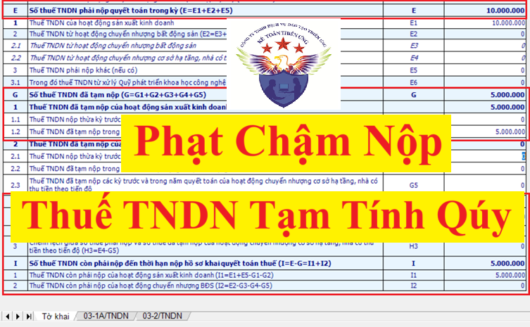

Hướng dẫn cách tính số tiền phạt chậm nộp thuế thu nhập doanh nghiệp tạm tính quý theo quy định mới nhất năm 2026 tại Nghị định 91/2022/NĐ-CP
1. Quy định về phạt chậm nộp thuế TNDN tạm tính quý
Theo quy định tại khoản 3, điều 1 của Nghị định 91/2022/NĐ-CP sửa đổi khoản 6 Điều 8 Nghị định 126/2020/NĐ-CP thì:
Tổng số thuế thu nhập doanh nghiệp đã tạm nộp của 04 quý không được thấp hơn 80% số thuế thu nhập doanh nghiệp phải nộp theo quyết toán năm.
Trường hợp người nộp thuế nộp thiếu so với số thuế phải tạm nộp 04 quý thì phải nộp tiền chậm nộp tính trên số thuế nộp thiếu kể từ ngày tiếp sau ngày cuối cùng của thời hạn tạm nộp thuế thu nhập doanh nghiệp quý 04 đến ngày liền kề trước ngày nộp số thuế còn thiếu vào ngân sách nhà nước.
Trường hợp người nộp thuế nộp thiếu so với số thuế phải tạm nộp 04 quý thì phải nộp tiền chậm nộp tính trên số thuế nộp thiếu kể từ ngày tiếp sau ngày cuối cùng của thời hạn tạm nộp thuế thu nhập doanh nghiệp quý 04 đến ngày liền kề trước ngày nộp số thuế còn thiếu vào ngân sách nhà nước.
2. Mức phạt chậm nộp thuế TNDN tạm tính quý năm 2026
Nếu doanh nghiệp mà có:
Tổng số thuế thu nhập doanh nghiệp đã tạm nộp của 04 quý thấp hơn 80% số thuế thu nhập doanh nghiệp phải nộp theo quyết toán năm thì sẽ bị tính tiền phạt chậm nộp
+ Tính trên số thuế nộp thiếu so với số thuế TNDN phải nộp theo quyết toán năm
+ Tính từ ngày tiếp sau ngày cuối cùng của thời hạn tạm nộp thuế thu nhập doanh nghiệp quý 04 đến ngày liền kề trước ngày nộp số thuế còn thiếu vào ngân sách nhà nước.
+ Mức tính tiền chậm nộp bằng 0,03%/ngày tính trên số tiền thuế chậm nộp
+ Tính từ ngày tiếp sau ngày cuối cùng của thời hạn tạm nộp thuế thu nhập doanh nghiệp quý 04 đến ngày liền kề trước ngày nộp số thuế còn thiếu vào ngân sách nhà nước.
+ Mức tính tiền chậm nộp bằng 0,03%/ngày tính trên số tiền thuế chậm nộp
3. Ví dụ hướng dẫn cách tính số tiền phạt chậm nộp thuế TNDN tạm tính quý theo quy định mới nhất năm 2026
Năm 2025, Công ty Kế Toán Diệu Tâm có tình hình nộp thuế TNDN tạm tính các quý trong năm như sau:
| Qúy | Qúy 1 | Qúy 2 | Qúy 3 | Qúy 4 | Tổng cộng đã nộp |
| Số tiền | 100.000đ | 1.000.000đ | 1.000.000đ | 2.000.000đ | 5.000.000đ |
| Nộp ngày | 15/04/2025 | 10/07/2025 | 28/10/2025 | 20/01/2026 |
Ngày 30/03/2026, Công ty Kế Toán Diệu Tâm làm tờ khai quyết toán thuế TNDN cho kỳ tính thuế năm 2025, trên tờ khai quyết toán thuế thu nhập doanh nghiệp mẫu 03/TNDN theo thông tư 80/2021/TT-BTC ra kết quả như sau:
+ Số tiền thuế TNDN phải nộp khi quyết toán (tại chỉ tiêu E) = 10.000.000đ
+ Số tiền thuế TNDN còn phải nộp (tại chỉ tiêu I) = 5.000.000đ
Sau khi nộp tờ khai quyết toán thuế TNDN mẫu 03/TNDN về cơ quan thuế thì công ty Kế Toán Diệu Tâm cũng đã nộp nốt số tiền thuế còn thiếu là 5.000.000đ tại chỉ tiêu I trên tờ khai quyết toán 03/TNDN về NSNN (nộp vào ngày 30/03/2026)+ Số tiền thuế TNDN còn phải nộp (tại chỉ tiêu I) = 5.000.000đ

Xác định số tiền phạt chậm nộp thuế TNDN tạm tính quý cho công ty Kế Toán Diệu Tâm:
Số tiền thuế TNDN phải nộp khi quyết toán năm 2025 = 10.000.000đ
=> 80% số thuế thu nhập doanh nghiệp phải nộp theo quyết toán năm 2025 = 10.000.000 x 80% = 8.000.000đ
(Kết luận: Tổng số thuế thu nhập doanh nghiệp đã tạm nộp của 04 quý trong năm 2025 của công ty Kế Toán Diệu Tâm mà thấp hơn 800.000đ thì sẽ bị phạt chậm nộp)
Tổng số thuế thu nhập doanh nghiệp mà công ty Diệu Tâm đã tạm nộp của 4 quý trong năm 2025 là 5.000.000đ => Đang thấp hơn "80% số thuế thu nhập doanh nghiệp phải nộp theo quyết toán năm 2025 là 8.000.000đ"
=> Công ty Diệu Tâm sẽ bị phạt chậm nộp tiền thuế TNDN tạm tính quý
3.1. Xác định số tiền còn thiếu:
| Số tiền thuế còn thiếu | = |
Tổng số thuế TNDN phải nộp theo tờ khai quyết toán (Số tiền tại chỉ tiêu E trên tờ khai QTT TNDN) |
- |
Tổng số thuế thu nhập doanh nghiệp đã tạm nộp của 04 quý (Số tiền tại chỉ tiêu G2 trên tờ khai QTT TNDN) |
| = | 10.000.000 | - | 5.000.000 | |
| = |
5.000.000đ (Số tiền tại chỉ tiêu H1 trên tờ khai QTT TNDN) |
3.2. Xác định số ngày chậm nộp
+ Tính từ ngày tiếp sau ngày cuối cùng của thời hạn tạm nộp thuế thu nhập doanh nghiệp quý 04
Theo quy định tại Điều 55 của Luật Quản lý thuế số 38/2019/QH14 về thời hạn nộp thuế thì:
Đối với thuế thu nhập doanh nghiệp thì tạm nộp theo quý, thời hạn nộp thuế chậm nhất là ngày 30 của tháng đầu quý sau.
=> Ngày cuối cùng của thời hạn tạm nộp thuế thu nhập doanh nghiệp quý 04/2025 là ngày 30/01/2026
Lưu ý: Trường hợp thời hạn nộp hồ sơ khai thuế, thời hạn nộp thuế trùng với ngày nghỉ theo quy định thì thời hạn nộp hồ sơ khai thuế, thời hạn nộp thuế được tính là ngày làm việc tiếp theo của ngày nghỉ đó
(theo quy định tại Điều 86 của thông tư 80/2021/TT-BTC về Thời hạn nộp thuế)
=> Ngày tiếp sau ngày cuối cùng của thời hạn tạm nộp thuế thu nhập doanh nghiệp quý 04/2025 là ngày 31/01/2026 nhưng do ngày 31/01/2026 và ngày 01/02/2026 là ngày nghỉ thứ 7, chủ nhật nên được chuyển sang ngày làm việc tiếp theo là ngày 02/02/2026
Vậy là: Sẽ bị tính phạt chậm nộp thuế TNDN từ ngày 02/02/2026
Công ty Diệu Tâm đã nộp nốt số tiền thuế còn thiếu là 5.000.000đ phát sinh dương tại chỉ tiêu I trên tờ khai quyết toán 03/TNDN về NSNN vào ngày 30/03/2026
=> Ngày liền kề trước ngày nộp số thuế còn thiếu vào ngân sách nhà nước là ngày 29/03/2026
=> Ngày liền kề trước ngày nộp số thuế còn thiếu vào ngân sách nhà nước là ngày 29/03/2026
Vậy là: Sẽ bị tính phạt chậm nộp thuế TNDN đến ngày 29/03/2026
Kết luận:
Số ngày chậm nộp tiền thuế TNDN: sẽ được tính từ ngày 02/02/2026 đến ngày 29/03/2026
Số ngày chậm nộp tiền thuế TNDN: sẽ được tính từ ngày 02/02/2026 đến ngày 29/03/2026
Từ ngày 02/02/2026 đến 29/03/2026 có tổng số ngày như sau:
+ Tháng 2/2026: = 28 - 2 + 1 = 27 ngày (Tính cả ngày nghỉ lễ tết)
+ Tháng 3/2026: 29 ngày
+ Tháng 3/2026: 29 ngày
=> Tổng số ngày chậm nộp tiền thuế TNDN = 27+ 29 = 56 ngày
3.3. Xác định mức phạt chậm nộp:
Theo quy định tại khoản 2, Điều 59 Luật Quản lý thuế 38/2019/QH14 quy định về việc xử lý đối với việc chậm nộp tiền thuế:
Mức tính tiền chậm nộp bằng 0,03%/ngày tính trên số tiền thuế còn thiếu
Công thức tính tiền phạt chậm nộp thuế:|
Số tiền phạt chậm nộp |
= |
Số tiền thuế còn thiếu |
X |
0,03% |
X |
Số ngày chậm nộp |
| = | 5.000.000 | X | 0,03% | X | 56 ngày | |
| = | 84.000đ | |||||
Công ty đào tạo Kế Toán Diệu Tâm mời các bạn tham khảo thêm bài viết: